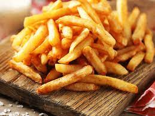
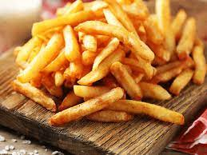

A sandwich is a food typically consisting of vegetables, sliced cheese or meat placed on or between slices of bread, or more generally any dish wherein bread serves as a container or wrapper for another food type.
Pizza is an Italian dish with a round in shape made with a base of wheat dough on which, the toppings of tomato, onion, capsicum, corn, cheese, and chicken is put with contents of spices then baked in the oven at high-temperature and lastly served with chili flakes and oregano or seasonings.
French fries are served hot, either soft or crispy, and are generally eaten as part of lunch or dinner or by themselves as a snack, and they commonly appear on . the menus of diners, fast food restaurants, pubs, and bars They are usually salted and, depending on the country, may be served with ketchup, vinegar, mayonnaise, tomato sauce, or other local specialties.
A hamburger is a sandwich consisting of one or more cooked patties of ground meat, usually beef, placed inside a sliced bread roll or bun. The patty may be pan fried, grilled, smoked or flame broiled.